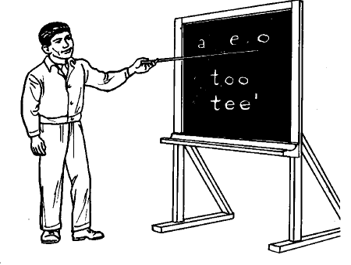

La escritura en lengua indígena es una forma de plasmar la visión del mundo y de interpretar nuestra realidad. Para ser posible este trabajo es gracias a las aportaciones de los jóvenes del Bachillerato Integral Comunitario No. 18 de San Agustín Tlacotepec, así como la aportación de algunos padres de familia de la misma población y para la selección y diseño de ilustraciones a la maestra Mary Hopkins del ILV.
Ja chiso_o tnu'un maa_o “tnu'un savi” chiso_o tna'an jani ini ma_o ñuu_o . Ja nkuva'a tutu ya'a, ndakuta'vi sa nuu suchi kasikua ve'e ja'on uni, tata nana suchi kasikua'a ji'in ña'a sikua'a nani Mari Hopkins.
Sa'a tu'va_sa tutu ya'a ja ku ñayii ñuu_o ja ka ntsi'i ini_i ja ku tnu'un savi.